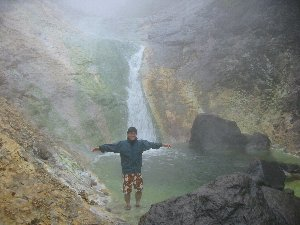
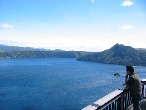
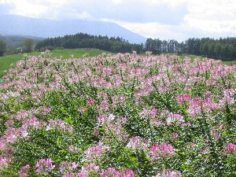

北海道自然に触れる旅 | 2003年9月 |
|---|---|
| 友人Ｎがカヌーを買ったというので、友人の住む北海道で、釧路川カヌー下りをやろう！と言う事になり北海道へ向かう。 千歳に住むＮと合流し一路車で摩周へ。Ｎのカヌーはカナディアンカヌーで二分割にすることが可能であり、車内にカヌーを入れての移動。 その日は移動で終わる。宿泊はペンション「ニューマリモ」。一泊朝食付きで5000円+消費税 次の日は快晴。9月の北海道なのに気温は20℃を超え暑いくらいの陽気。今回は釧路川を二日掛けて下る予定で途中キャンプする為、テントやシュラフ、食料を積み込む。 朝のTVで週末運勢なるものをやっていた。私の牡羊座は12位中1位の最高の週末でしょう。みたいな事を言っているが、Nの運勢は魚座。12位中11位でよくない週末でしょう。出かけないほうが良いとまで言われていた気がする。 摩周辺りの釧路川は以外に流れが速い。目の前をインフレータブルカヌー（ゴムボートのように空気で膨らんでいるヤツ）がいくつも通り過ぎていくが、それを見てもかなり速い。漕ぐというより流されている感じ。 我々も覚悟を決め、いざ出陣！と、そのとき私が持っていたブレード（オールみたいなの）がベキッと音と共に折れる。かなり先行き不安である。 応急修理をして出発。やはり漕ぐというより流されている。と、前方でゴーと滝のような音がしてきた。みると両岸からテトラが敷き詰めてあり真中だけ開いていて、少し落ち込んでいる。やばい！回避したと思っていたMapに載っていた瀬だ！ 岸に寄せようにも流れが速く、どんどん吸い込まれていく。仕方がない。落ち込んでいると言ってもそんなに落差があるわけではない・・・ように見える。乗り切るしかない。 覚悟を決め流れに艇を任せる。ぐんぐんと迫る瀬は白波が立ち、流れが盛り上がっている感じに見えるが、落差はそれほどでもない。その傍で釣り人が見える。「あっ邪魔しちゃったかな」と思うがしょうがない。 上下に激しく揺れる艇の上で釣り人に謝っていたその時、上下に揺れていた艇が左に大きく傾きそのままひっくり返る！釧路川の水は冷たくは無かったが、足がつかないぐらい深い。訳も分らず水上に頭を出すと、そこはひっくり返った艇の中だった。荷物がチャポチャポ浮いている。急いで外に出ると釣り人が心配そうに覗き込んでいた。 激しい流れの中、艇を掴み何とか岸に寄せる。ライフジャケット着けているので浮くのには支障がない。このライフジャケットも初めての使用で役に立った訳だ。 | |
 意気揚々と出発の雄叫び！ |  開始５００ｍで沈！乾燥中 |
| とりあえず岸に上がるが、この沈でＮはメガネをなくし、携帯とデジカメ一台が壊れた。その日のキャンプ道具、シュラフ、着替え、料理道具が水に浸かった。 私はと言うと帽子とタオルをなくしたが、デジカメ・着替え類は防水バックに入れていたため難を逃れ、テント類も多少の濡れで済んだ。 とりあえず、落ち込んだ気分を立て直すために早々と昼食とし、再度釧路川にアタックを賭ける。今度は慎重に。mapによればこの先しばらくは大きな瀬は無いはず。 しばらく進むと、倒木が川を塞ぎ、流れが急で渦を巻いているような所にでた。さすがにこれは無理だろうと、河原を持っていこうとしたが、両側は深い森。そこを抜けたとしても向こうの河原はちょっとした崖のようになっていて川に降りられない。 時間もだいぶ過ぎていて、これ以上遅くなると予定キャンプ地に着けないことから、本日はここで断念。歩いて車を取りに向かう。そして車でキャンプ地の標茶（しべちゃ）へ。 この日は河原にテントを張り、風呂に入り、スーパーでラム肉を買ってジンギスカンでカンパイ！明日に備える。 翌日、昨日と打って変わって雨！なんと予定より早く台風が来た模様。雨、風と霧で泣く泣く釧路川下りを断念せざるおえなかった。本日のコースが皆が想像するようなゆったりとした湿原コースだったのに。非常に悔しい！台風め！ この日は仕方なく車で釧路湿原を見に行って（と言っても霧で見えない）そのままウトロのカムイワッカの湯に向かう。 ここは最近TV等で紹介されたため有名になったが、本来は秘湯。滝壺が温泉になっていると言うところだ。 釧路からだいぶ距離があるため、夕方近くに現地着。途中から舗装されていない道路をエゾジカを見ながら走る。風景は秘湯だが車は多く、観光バスまで走っている始末。 この温泉は滝壺まで川を上って行かなければならない。すでにこの川が暖かく、川上りの様な感じで登っていく。２０分くらい来ただろうか、やっと滝壺が見えた。特に看板は無いがここがそうらしい。なるほど確かに暖かい。ちゃんとお湯だ。 ただ、この温泉は酸性度が非常に強く、傷や虫さされが有ると非常に痛い。染みるを通り越し痛いのだ。こんな所も蚊に喰われていたかと感心するぐらい痛い所が分かる。 | |
 カムイワッカの湯への道は厳しい〜 右に登っている人見えます？これがルートです |  これがカムイワッカの湯（滝壺）です 脱衣所などは有りません |
| その日は一昨日止まったペンションに泊まる。本日は夕食を付けて、一泊二食付き6500円＋消費税。夕飯は和食で食べきれないくらい出た。素朴だがとても美味しい。 翌日は昨日と打って変わって（この表現多いな）晴れ！ しかし、本日中に美瑛に行かねばならないためカヌーは出来ない。せめて観光でもと、摩周湖へ向かう。 摩周湖は天気が良く、その青さが強調されていた。風は台風一過の為か強いモノの景色はバツグンだった。 | |
 霧の摩周湖ですが晴れました 本当に素晴らしい青です。空よりも・・ |  摩周湖第３展望台かな？ 湖面に雲の影が流れて綺麗でした |
| 小一時間摩周で写真を撮り急ぎ足、美瑛に向かう。この日は十勝岳温泉に入り、本日の宿ロッジ「遊岳荘」へ。 翌最終日。あー、今日の夕方の飛行機で帰らなければ。と思いつつも、いー天気になった美瑛を少しでも写真に撮りたくて、時間ぎりぎりまで美瑛を廻る。おかげで気に入ったモノが撮れました。 やっぱ美瑛は写真の題材に事欠かないな。ただ、作物の収穫が終わった後なので、いまいち畑が寂しかった。 下記にちょこっと美瑛の写真載せますね。 | |
 新栄の丘近辺 |  四季彩の丘 |
 JR富良野線にて |  有名なセイブンスターの木です |